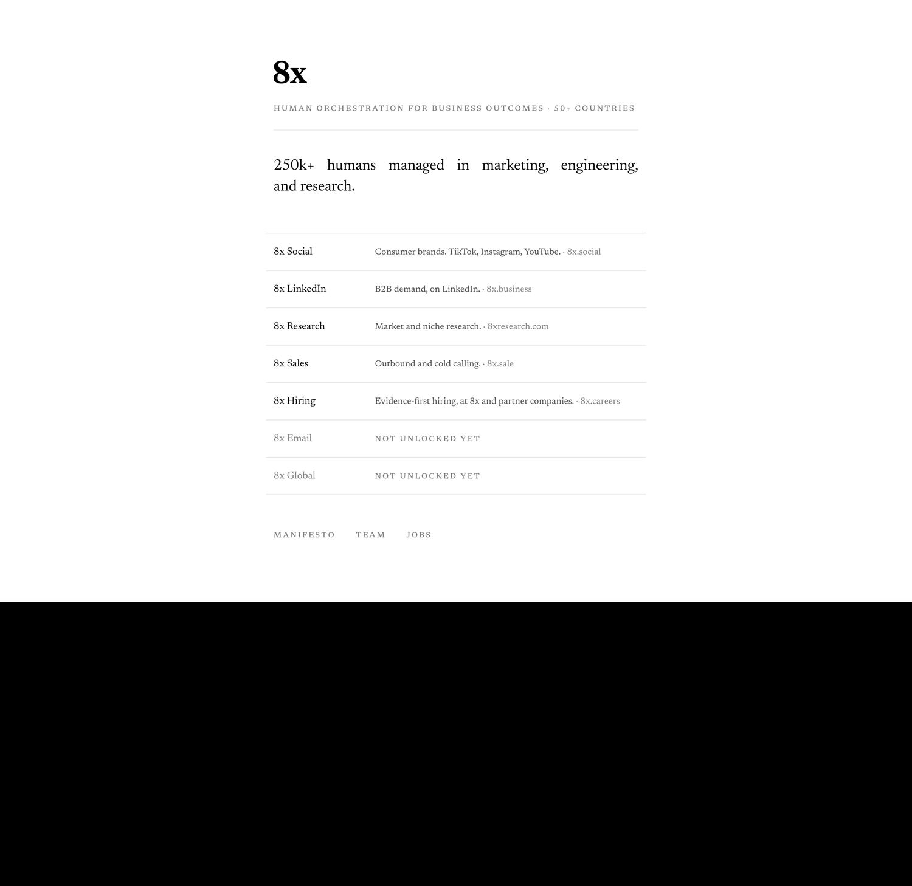
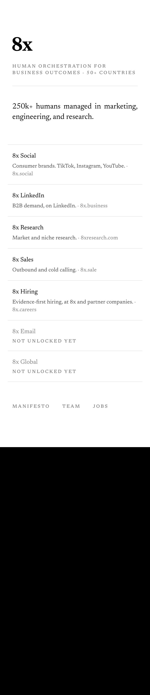
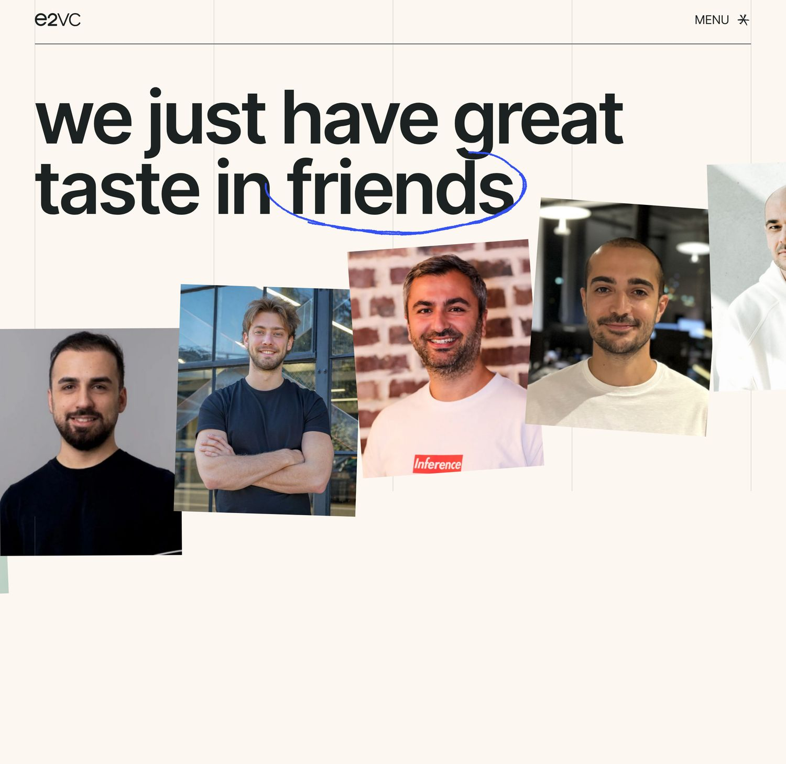
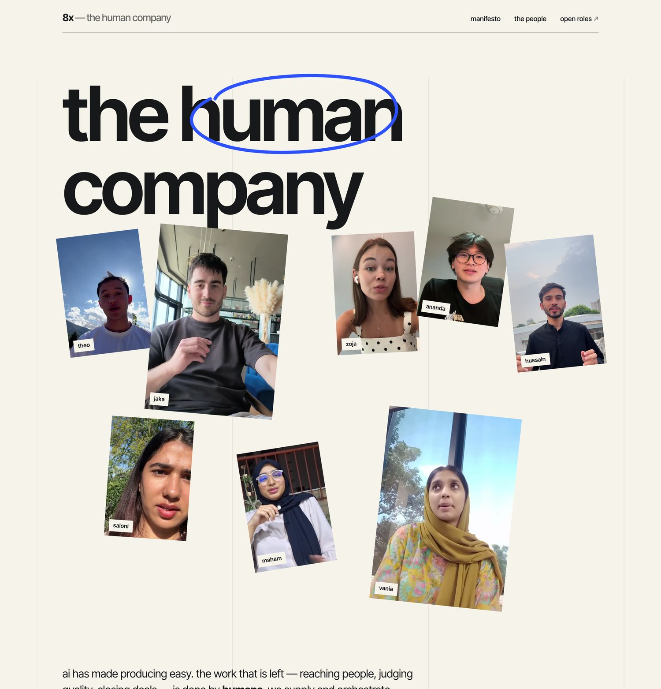
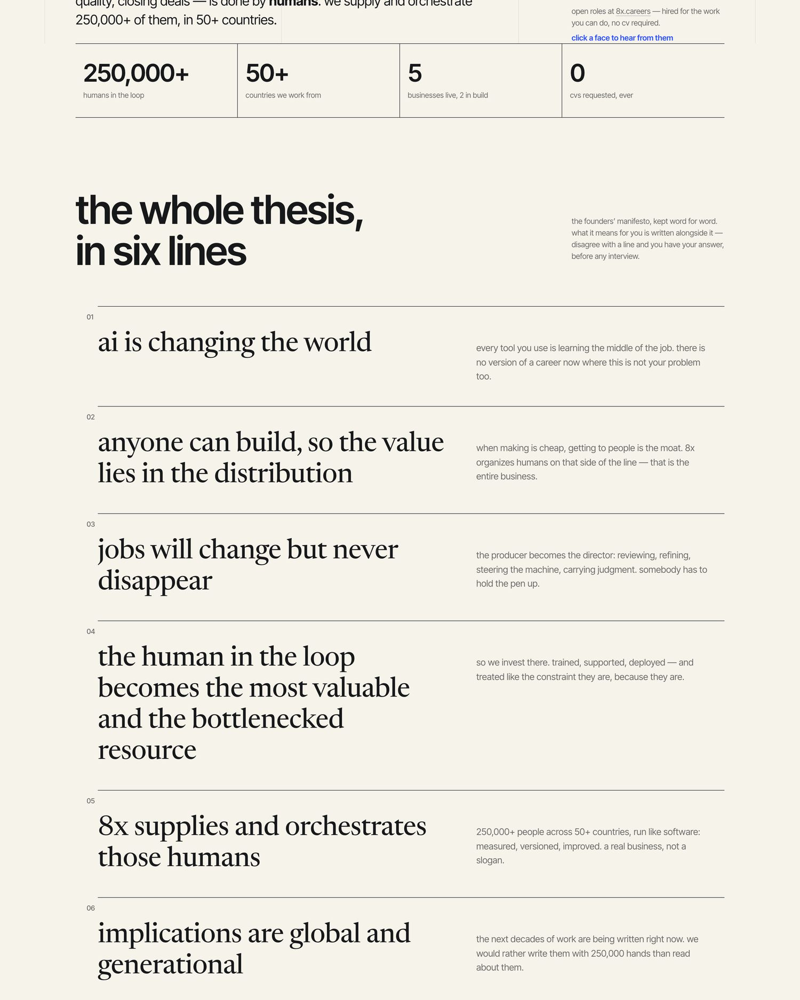
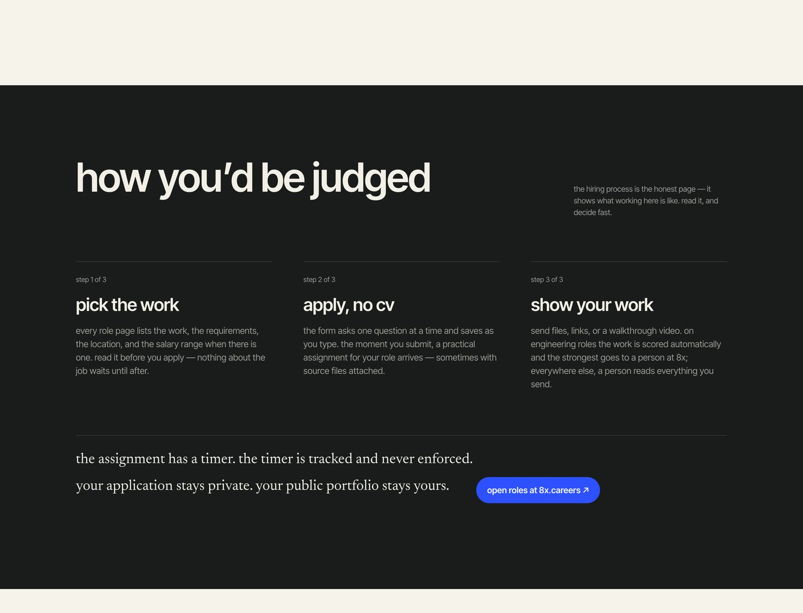
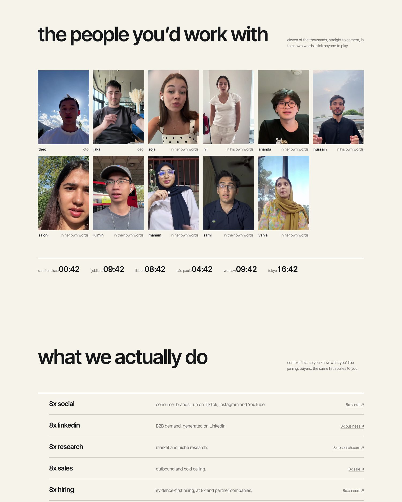
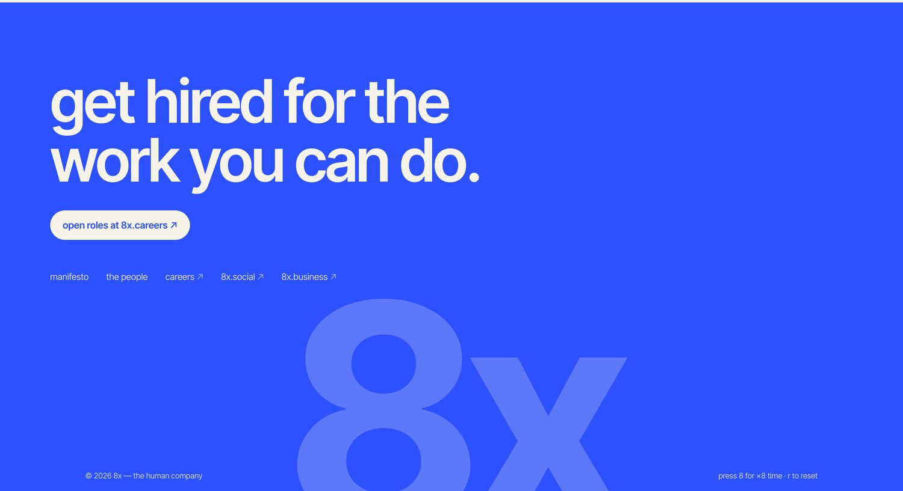
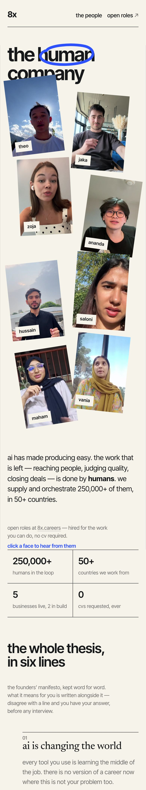
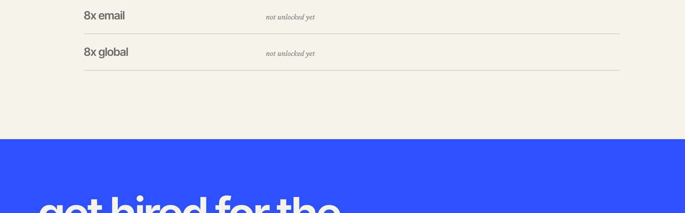

shot 1 · ~90s


shot 2 · ~90s

shot 3 · ~45s
no image for a deliberate absence — say it to camera, and point at the dark band and serif in the shots that follow as evidence the register is 8x’s own.
shot 4 · ~2 min

shot 5 · ~1 min

shot 6 · ~1.5 min

shot 7 · ~1 min


shot 8 · ~1 min

shot 9 · ~1 min
live site for the closing scroll: the build itself
